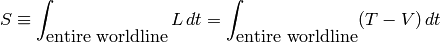
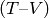
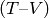

The least action principle¶
Level: Medium (scientific libraries, algorithms)
From: http://www.eftaylor.com/software/ActionApplets/LeastAction.html (With Java applets)
Java source code at: http://www.eftaylor.com/leastaction.html
Throw an apple vertically upward from the ground (zero height). We demand that 3 seconds later the apple return to our hand at the same height (zero) from which we launched it. What is the motion of this apple between the events of launch and catch? At what height can the apple be found at any given time? Or to express the question more technically: What is the worldline of the apple between launch and catch? We use the principle of least action to find answers to these questions.

The principle of least action defines the action  for motion along a worldline between two fixed events:
for motion along a worldline between two fixed events:
Here  is called the Lagrangian. In simple cases the Lagrangian is equal to the difference between the kinetic energy
is called the Lagrangian. In simple cases the Lagrangian is equal to the difference between the kinetic energy  and the potential energy
and the potential energy  , that is, . In this interactive document we will approximate a continuous worldline with a worldline made of straight connected segments. The computer then multiplies the value of  on each segment by the time lapse
, that is, . In this interactive document we will approximate a continuous worldline with a worldline made of straight connected segments. The computer then multiplies the value of  on each segment by the time lapse  for that segment and adds up the result for all segments, giving us an approximate value for the action along the entire worldline. Our task is then to move the connected segments of the worldline so that they result in the minimum total value of the action .
for that segment and adds up the result for all segments, giving us an approximate value for the action along the entire worldline. Our task is then to move the connected segments of the worldline so that they result in the minimum total value of the action .
In the following we assume a mass of 0.2 kilogram for the apple.
Try to obtain a plot similar to the obtained in “Display #2: Automatic hunting for worldline of least action”, when the button Hunt is clicked: